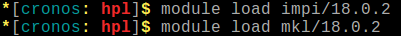
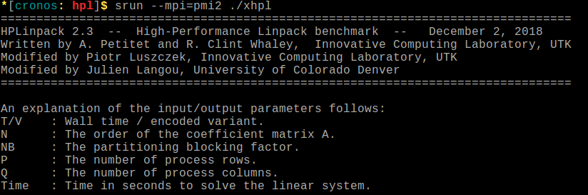
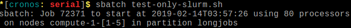

Testing my job
Here you will find some interesting ways to test your jobs before submitting it to compute a real problem with a big Walltime. It is always a good idea to use some of these tips in order to prevent the failure of your jobs.
Debug partition
The debug partition is a useful queue created to test your Slurm job script, it does not have any performance capabilities but its nodes have the same environment as the longjobs partition.
To use this partition you only need to specify it in your batch script like this:
#!/bin/bash
#SBATCH --partition=debug
# Other sbatch parameters
Note
Quick aspects about the debug partition:
- Apolo:
Number of Nodes: 2
Number of CPUs per node: 2
Memory per node: 2GB
Cronos: Not deployed yet.
For more information, see getting cluster information section
Warning
Debug partition has the same environment of longjobs, so if you want to test a job that will be executed in a different queue (e.g Accel or Bigmem) it does not guarantee a successful execution.
salloc command
This command is used to allocate resources (e.g Nodes, tasks, mem, etc.) and, if available, interactively run jobs steps under that allocation using a sub-shell created by Slurm [1] .
This sub-shell will let you write those commands that you use to execute your
application on the allocated compute node(s) of your job, as they were executed
on a sbatch script. Thus, every command will give you immediate feedback of its
std_out, std_err and EXIT_CODE in your terminal. We recommend
following these parts: Environment creation and Job(s) steps.
See Submitting jobs to know more information.
This example shows the submission of HPL, a well-known implementation of
the High Performance Computing Linpack Benchmark, it uses MPI.
Following the same parts showed in the Submitting jobs we will have:
Environment creation: We need to load two modules:
impiandmklJob step: HPL uses one job-step, the execution of
xhpl
In this case, we executed HPL using 16 processes (--ntaks=16 in Slurm).
You need to specify the Walltime, it refers to the time that the sub-shell
will be alive.
First, we ran salloc specifying the number of processes and the period of time,
allocating the resources and, if available, it will create a sub-shell.
Next, we ran the commands to create the environment
Then we executed the job-step. You can notice the std_out was immediately written on the terminal
Warning
If you are using salloc, the use of srun in every job-step is mandatory.
It does not matter the type of job you are computing (even a Serial or OpenMP job).
This is because, compared with the jobs submitted using sbatch, salloc’s jobs
does not have a BatchHost by default, so all the commands are executed in the
master node, instead of one of the allocated compute nodes. You need to
use srun to explicitly run that command in the allocated node(s)
This example illustrates the problem of not using srun in a job-step
and using srun, then:
--test-only parameter
This parameter will validate the batch script and return an estimate of when the
job would be scheduled to run [2], given the current state of the queue and
other arguments specified (e.g Nodes, tasks, cores) on the job
requirements. THE JOB is NOT actually submitted.
As an example, we use this sbatch script, as you can notice, we add the line
#SBATCH --test-only
#!/bin/bash
#SBATCH --job-name=test_only # Job name
#SBATCH --ntasks=80 # Number of tasks (processes)
#SBATCH --ntasks-per-node=16 # Maximum possible value in Cronos
#SBATCH --time=01:00 # Walltime
#SBATCH --partition=longjobs # Partition
#SBATCH --test-only # Test the job
##### ENVIRONMENT CREATION #####
##### JOB COMMANDS ####
srun not_a_executable
output:
